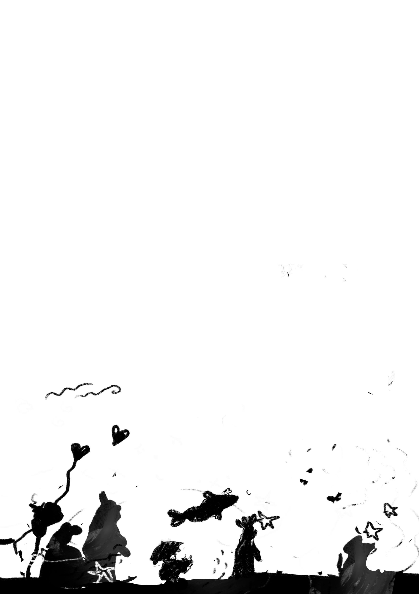
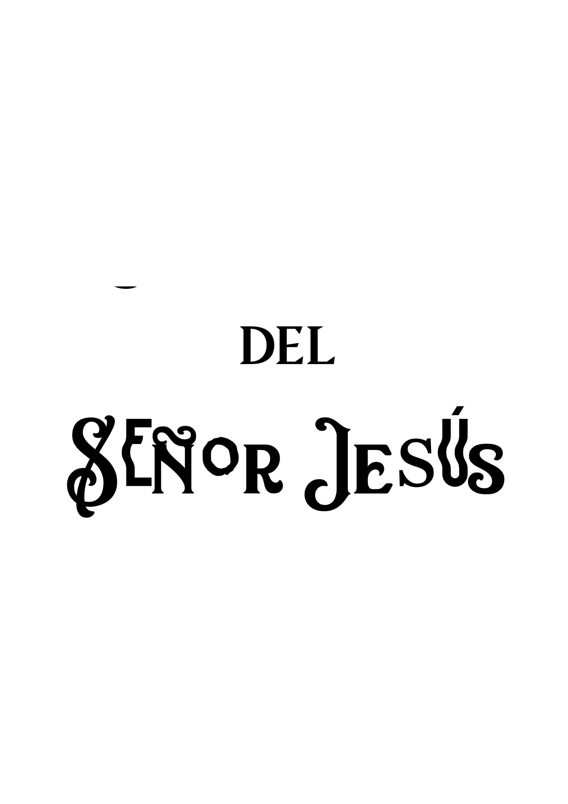

Loading passage…
Beatitudes Coloring Booklet (Matthew 5)

Public domain educational work based on Matthew 5. Free to print, color, and share.
1–3 printable sheets with the exact pages (~35 KB)
Canonical block booklet ready to fold & staple (~120 KB)
Full 66-book PDF with hierarchical bookmarks

Lámina 1: Cubierta de apertura